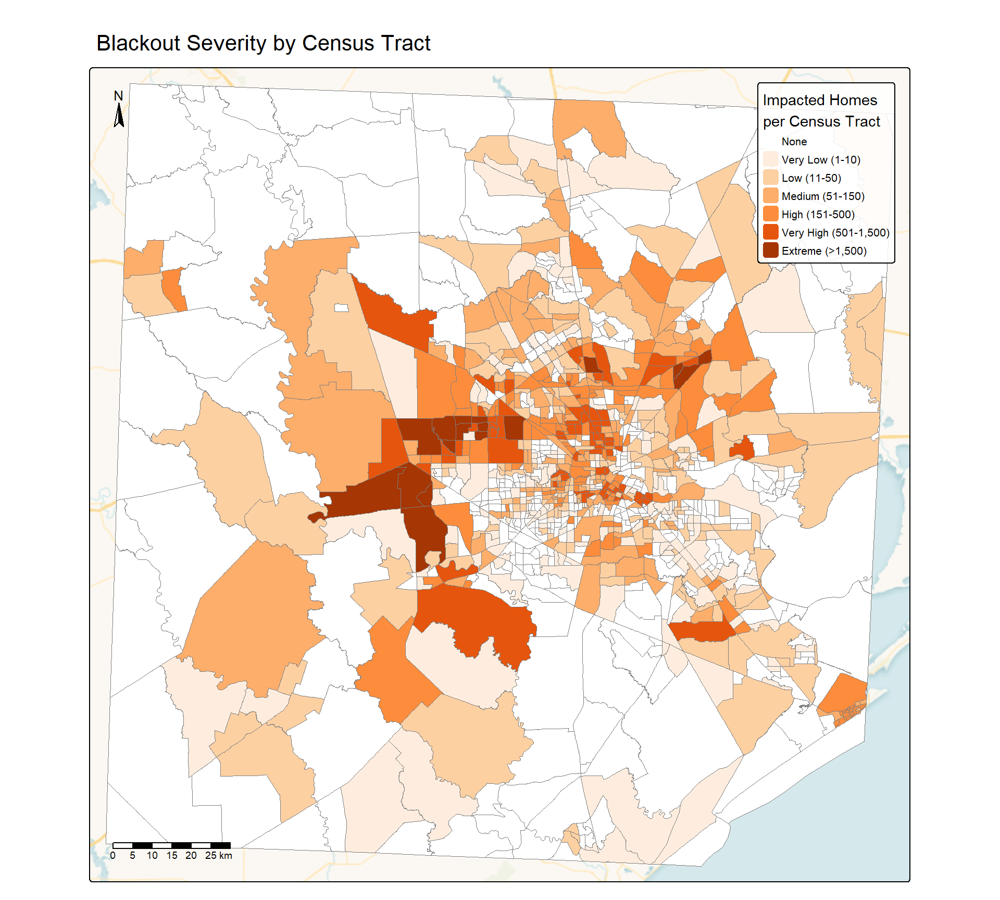
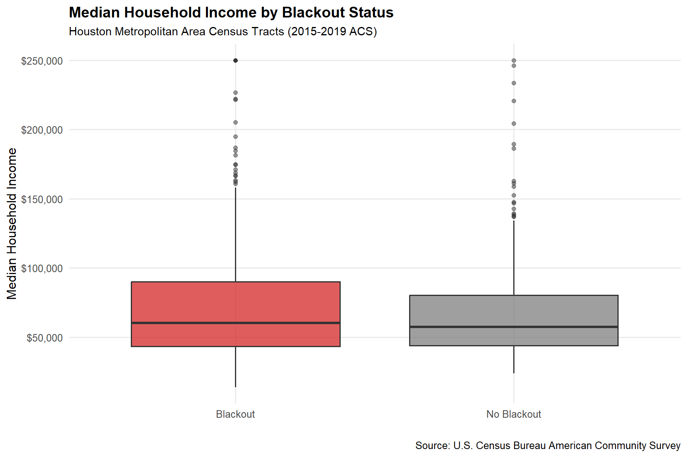

Mapping the Texas Blackouts: A Spatial Analysis of the 2021 Winter Storm Impacts
Using satellite night lights data and socioeconomic indicators to identify which Houston communities lost power during the historic February 2021 winter storms
In February 2021, a historic winter storm swept across Texas, bringing record-low temperatures and overwhelming the state’s power grid. At the peak of the crisis, more than 4.5 million homes and businesses lost power, leaving residents without electricity for heating during freezing temperatures. The event resulted in at least 246 deaths and an estimated $195 billion in economic damages, making it one of the costliest natural disasters in U.S. history.
Research Question
This analysis addresses a critical question: Which communities in the Houston metropolitan area were most affected by the blackouts, and were there disparities in impacts across different income levels?
Understanding the spatial distribution of power outages and their relationship to socioeconomic factors is essential for:
Improving power grid resilience and emergency response planning
Identifying vulnerable communities that may need additional support during future crises
The February 2021 winter storm, known as Winter Storm Uri, exposed critical vulnerabilities in Texas’s isolated power grid. Unlike other states, Texas operates its own grid (ERCOT), which is not connected to neighboring states, limiting backup power options during emergencies. The unprecedented cold caused natural gas pipelines to freeze, wind turbines to ice over, and power plants to fail, creating a cascading crisis.
While the blackouts affected millions of Texans, their impacts were not uniformly distributed. Previous research on climate disasters has shown that low-income communities and communities of color often experience disproportionate impacts from extreme weather events. These communities may face longer recovery times, limited access to emergency resources, and inadequate infrastructure.
Remote Sensing for Disaster Assessment
Satellite-based night lights data provides a powerful tool for assessing power outages at scale. NASA’s Visible Infrared Imaging Radiometer Suite (VIIRS) captures daily nighttime light emissions, allowing researchers to detect changes in electrical grid function. By comparing light intensity before and after disasters, we can identify affected areas without relying solely on utility company reports, which may be incomplete during major crises.
This analysis combines VIIRS night lights data with OpenStreetMap building footprints and U.S. Census socioeconomic data to map blackout impacts and explore potential environmental justice dimensions of the 2021 Texas blackouts.
Data and Methods
Data Sources
This analysis integrates four primary datasets:
VIIRS Night Lights Data — NASA’s VIIRS instrument provides daily measurements of nighttime light intensity. I used two dates of imagery: February 7, 2021 (before the storm) and February 16, 2021 (during the height of the blackouts). The data is measured in nanowatts per square centimeter per steradian (nW cm⁻²sr⁻¹) (NASA LAADS DAAC 2021).
OpenStreetMap Building Footprints — Residential building polygons for the Houston metropolitan area, including houses, apartments, and other residential structures (OpenStreetMap Contributors 2021).
OpenStreetMap Road Network — Highway and major road data used to filter out areas where reduced light may be due to decreased traffic rather than power outages (OpenStreetMap Contributors 2021).
U.S. Census American Community Survey — 2015-2019 five-year estimates at the census tract level, including median household income datndefinedandefine
Analytical Approach
Code
# Load required packageslibrary(tidyverse) # Data manipulation and visualizationlibrary(sf) # Spatial data handlinglibrary(here) # File path managementlibrary(terra) # Raster data processinglibrary(stars) # Spatiotemporal arrayslibrary(tmap) # Thematic mappinglibrary(kableExtra) # Table formatting
The analysis follows these steps:
Load and prepare spatial data — Read VIIRS night lights tiles, building footprints, road networks, and census data
Calculate light intensity changes — Compare pre- and post-storm imagery to identify areas with significant light reduction
Define blackout threshold — Classify areas with light intensity drops >200 nW cm⁻²sr⁻¹ as experiencing blackouts
Filter highway corridors — Exclude areas within 200m of major highways to avoid misidentifying reduced traffic as power outages
Identify impacted buildings — Intersect blackout areas with residential building footprints
Analyze socioeconomic patterns — Compare median household income distributions between census tracts with and without blackouts
Loading and Preparing the Data
Code
# Load VIIRS night lights raster tiles for Houston area# February 7, 2021 (pre-storm)VIIRS_07a <-rast(here("posts/eds223-final/data/VNP46A1/VNP46A1.A2021038.h08v05.001.2021039064328.tif"))VIIRS_07b <-rast(here("posts/eds223-final/data/VNP46A1/VNP46A1.A2021038.h08v06.001.2021039064329.tif"))# February 16, 2021 (during blackouts)VIIRS_16a <-rast(here("posts/eds223-final/data/VNP46A1/VNP46A1.A2021047.h08v05.001.2021048091106.tif"))VIIRS_16b <-rast(here("posts/eds223-final/data/VNP46A1/VNP46A1.A2021047.h08v06.001.2021048091105.tif"))# Load OpenStreetMap highways (motorways only)highways <-st_read(here("posts/eds223-final/data/gis_osm_roads_free_1.gpkg/gis_osm_roads_free_1.gpkg"),query ="SELECT * FROM gis_osm_roads_free_1 WHERE fclass='motorway'",quiet =TRUE)# Load OpenStreetMap residential buildingshouses <-st_read(here("posts/eds223-final/data/gis_osm_buildings_a_free_1.gpkg/gis_osm_buildings_a_free_1.gpkg"),query ="SELECT * FROM gis_osm_buildings_a_free_1 WHERE (type IS NULL AND name IS NULL) OR type in ('residential', 'apartments', 'house', 'static_caravan', 'detached')",quiet =TRUE)
Code
# Load Census ACS data - requires joining geometry with income attributessocio_geom <-st_read(here("posts/eds223-final/data/ACS_2019_5YR_TRACT_48_TEXAS.gdb/"),layer ="ACS_2019_5YR_TRACT_48_TEXAS", quiet =TRUE)socio_income <-st_read(here("posts/eds223-final/data/ACS_2019_5YR_TRACT_48_TEXAS.gdb/"),layer ="X19_INCOME", quiet =TRUE)# Join income data to geometries and reproject to match building datasocio <- socio_geom %>%rename("GEOID_Data"="GEOID_Data") %>%left_join(socio_income %>%rename("GEOID_Data"="GEOID"), by ="GEOID_Data") %>%st_transform(st_crs(houses))
All datasets use different coordinate reference systems initially, so I standardized them to EPSG:3083 (NAD83 / Texas Centric Albers Equal Area), which preserves area measurements needed for accurate spatial analysis.
Results
Visualizing the Blackouts: Before and After
The stark difference in nighttime light emissions reveals the massive scale of the power outages across Houston.
map <-tm_shape(combined_crop) +tm_raster(col.scale =tm_scale(values ="inferno"),col.legend =tm_legend(title ="Light Intensity\n(nW cm⁻²sr⁻¹)",title.size =0.9,text.size =0.6)) +tm_facets(ncol =2, free.scales =FALSE) +tm_title("Houston Night Lights: Before and After the Storm", size =1.2) +tm_layout(legend.outside =TRUE,legend.outside.position ="right",legend.outside.size =0.12,panel.labels =c("February 7 (Before)", "February 16 (After)"),fontfamily ="sans") +tm_graticules(lwd =0.2, col ="white", alpha =0.3, labels.size =0.5)map
The comparison reveals significant light reduction across much of the Houston metropolitan area. The bright urban core visible on February 7 dims substantially by February 16, indicating widespread power failures.
Identifying Blackout Areas
To systematically identify blackout zones, I calculated the difference in light intensity and classified areas with drops greater than 200 nW cm⁻²sr⁻¹ as experiencing blackouts.
Code
# Calculate light intensity differenceVIIRS_houston_diff <- VIIRS_07 - VIIRS_16# Classify blackout areas (drops >200 as blackouts)blackout_mask <-classify(VIIRS_houston_diff,matrix(c(-Inf, 200, NA, # Not a blackout200, Inf, 1), # Blackoutncol =3, byrow =TRUE))# Convert raster to vector polygonsblackout_vector <-st_as_stars(blackout_mask) %>%st_as_sf() %>%st_make_valid()# Crop to Houston and reprojectblackout_houston <-st_crop(blackout_vector, HOUSTON_BBOX) %>%st_transform(crs =3083)
Initial identification of blackout areas based on night lights analysis. Red areas experienced light intensity drops exceeding 200 nW cm⁻²sr⁻¹, indicating likely power outages.
Refining the Analysis: Excluding Highways
Major highways may show reduced light intensity due to decreased traffic rather than residential power outages. To improve accuracy, I excluded areas within 200 meters of motorways.
Refinement of blackout areas by excluding highway corridors. The yellow lines show major highways with 200m buffers applied. This step removes areas where reduced light may be due to decreased traffic rather than residential power outages.
This refinement helps ensure we’re identifying genuine residential power outages rather than changes in traffic patterns.
Quantifying Residential Impacts
By intersecting the blackout areas with residential building footprints, we can estimate how many homes lost power.
Code
# Reproject buildings and identify those in blackout zoneshouses <-st_transform(houses, crs =3083)blackout_homes <-st_intersection(houses, blackout_final)# Calculate statisticsn_blackout_homes <-length(unique(blackout_homes$osm_id))n_total_homes <-nrow(houses)pct_impacted <-round((n_blackout_homes / n_total_homes) *100, 1)
Finding: Approximately 157,410 residential buildings (33.1% of structures in the dataset) experienced blackouts during the February 2021 storms.
Code
# Create point representations for mappingall_homes_points <-st_centroid(houses)not_impacted_homes <- all_homes_points[!all_homes_points$osm_id %in% blackout_homes$osm_id, ]impacted_homes_points <-st_centroid(blackout_homes)
Spatial distribution of impacted and non-impacted residential buildings. Dark red points represent homes that experienced blackouts, while light pink points indicate buildings that maintained power throughout the crisis.
The map reveals that blackouts were widespread but not uniform. Some neighborhoods maintained power while adjacent areas went dark, suggesting the complexity of the grid failures.
Socioeconomic Analysis: Income and Blackout Exposure
Understanding where blackouts occurred is only part of the story. To assess whether impacts were distributed equitably, I aggregated affected buildings by census tract and examined their relationship to median household income. This tract-level analysis reveals whether certain communities bore a disproportionate burden during the crisis.
Code
# Transform census data to analysis CRSsocio <-st_transform(socio, crs =3083)# Crop to Houston areahouston_tracts <-st_crop(socio, st_bbox(blackout_houston))# Count impacted homes per tracthouston_tracts$n_homes <-as.numeric(lengths(st_intersects(houston_tracts, blackout_homes)))# Create impact categories for mappinghouston_tracts$impact_category <-cut(houston_tracts$n_homes,breaks =c(0, 1, 10, 50, 150, 500, 1500, Inf),labels =c("None","Very Low (1-10)","Low (11-50)","Medium (51-150)","High (151-500)","Very High (501-1,500)","Extreme (>1,500)"),include.lowest =TRUE)# Create binary blackout indicatorhouston_tracts$blackout <-factor(houston_tracts$n_homes >0,levels =c(TRUE, FALSE),labels =c("Blackout", "No Blackout"))
Code
# Transform tracts to match crs of basemap (this is done automatically by tmap, code included for transparency)houston_tracts_proj <-st_transform(houston_tracts, crs =3857)# Plot houses in census tracts affected by blackoutstm_basemap("CartoDB.VoyagerNoLabels") +tm_shape(houston_tracts_proj) +tm_fill(fill ="impact_category",fill.scale =tm_scale(values =c("white", "#feedde", "#fdd0a2", "#fdae6b","#fd8d3c", "#e6550d", "#a63603"),value.na ="transparent"),fill.legend =tm_legend(title ="Impacted Homes\nper Census Tract",title.size =0.9,text.size =0.65)) +tm_borders(col ="grey50", lwd =0.3) +tm_title("Blackout Severity by Census Tract", size =1.3) +tm_scalebar(position =c("left", "bottom"), text.size =0.6) +tm_compass(position =c("left", "top"), size =1.5) +tm_layout(legend.outside =FALSE,legend.position =c("right", "top"),legend.bg.color ="white",legend.bg.alpha =0.85,text.fontfamily ="sans")

Number of residential buildings that lost power by census tract. Darker colors indicate higher numbers of impacted homes. The spatial pattern shows that some tracts experienced extreme impacts while neighboring areas had minimal disruption.
The census tract analysis reveals substantial variation in blackout severity. Some tracts lost power for more than 1,500 residential buildings, while others experienced minimal disruption. This raises a critical question: were certain communities disproportionately affected?
Previous research on climate disasters shows that low-income communities and communities of color often experience greater exposure and more severe impacts. To investigate whether similar patterns emerged during the Texas blackouts, I analyzed the relationship between median household income and blackout exposure.
Code
houston_tracts_no_na <- houston_tracts %>%filter(!is.na(B19013e1))ggplot(houston_tracts_no_na, aes(x = blackout, y = B19013e1, fill = blackout)) +geom_boxplot(alpha =0.75, outlier.alpha =0.5) +scale_fill_manual(name ="Blackout Status",values =c("Blackout"="#d62728","No Blackout"="#7f7f7f")) +scale_y_continuous(labels = scales::dollar_format(),breaks =seq(0, 250000, 50000)) +labs(title ="Median Household Income by Blackout Status",subtitle ="Houston Metropolitan Area Census Tracts (2015-2019 ACS)",x ="",y ="Median Household Income",caption ="Source: U.S. Census Bureau American Community Survey") +theme_minimal(base_size =12, base_family ="sans") +theme(legend.position ="none",plot.title =element_text(size =14, face ="bold", hjust =0),plot.subtitle =element_text(size =11, hjust =0),panel.grid.minor =element_blank())

Median household income comparison between census tracts that experienced blackouts versus those that maintained power. The similar distributions suggest that income was not a strong predictor of blackout exposure during this crisis.
Key Finding: Census tracts that experienced blackouts had a median household income of 60,435, compared to 57,385 for tracts without blackouts. The difference of approximately $3,000 represents only about 5% variation, suggesting that income level was not a strong predictor of blackout exposure in this event.
Discussion
Main Findings
This analysis identified approximately 157,410 residential buildings (33.1% of the study area) that lost power during the February 2021 storms. Unlike typical climate disasters, blackout exposure showed minimal income-based disparities—tracts with and without blackouts had median incomes differing by only ~$3,000 (5%). This likely reflects the systemic nature of the grid failure: when the entire system collapsed, infrastructure vulnerabilities crossed neighborhood boundaries.
However, exposure differs from impact. Low-income communities faced greater difficulty evacuating, accessing backup heating, and recovering—even when blackout rates were similar (Gronlund 2014).
Limitations
Temporal resolution: Two snapshots cannot capture outage duration, which may vary by neighborhood.
Threshold sensitivity: The 200 nW cm⁻²sr⁻¹ cutoff is somewhat arbitrary and may miss some outages.
Data gaps: OpenStreetMap building coverage varies geographically, potentially introducing spatial bias.
Highway exclusion: The 200m buffer may inadvertently exclude legitimate residential blackouts.
Future work should incorporate daily time series data, analyze additional socioeconomic indicators, integrate health outcomes, and ground-truth results with utility records.
Policy Implications
The widespread blackouts indicate systemic vulnerabilities requiring comprehensive infrastructure winterization. Even when disasters affect communities uniformly, emergency response must account for differential vulnerabilities. Texas’s grid isolation limited backup options during the crisis, suggesting value in regional interconnection. Remote sensing approaches can provide rapid, independent disaster assessment to complement utility reporting.
Conclusion
The February 2021 blackouts revealed catastrophic infrastructure vulnerabilities affecting millions. This analysis demonstrates how satellite remote sensing combined with socioeconomic data enables rapid disaster assessment. While blackouts affected Houston relatively uniformly across income levels—likely due to systemic grid failure—this doesn’t mean impacts were equitable. Understanding both exposure patterns and underlying vulnerabilities remains essential for building resilient, just infrastructure as climate change intensifies extreme weather events.
Data Sources and Acknowledgments
VIIRS Night Lights Data (VNP46A1) — NASA’s Visible Infrared Imaging Radiometer Suite, Suomi NPP satellite, tiles h08v05 and h08v06. Accessed via NASA Earthdata: https://worldview.earthdata.nasa.gov/
Gronlund, Carina J. 2014. “Racial and Socioeconomic Disparities in Heat-Related Health Effects and Their Mechanisms: A Review.”Current Epidemiology Reports 1 (3): 165–73. https://doi.org/10.1007/s40471-014-0014-4.
![]()